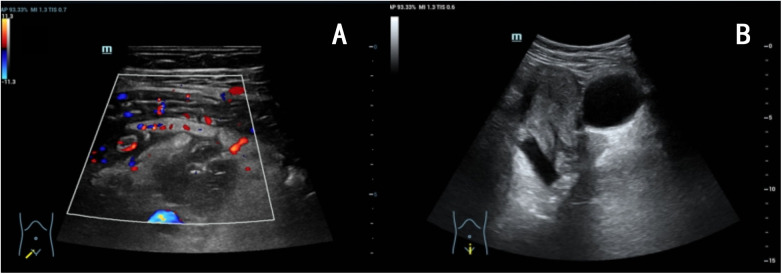
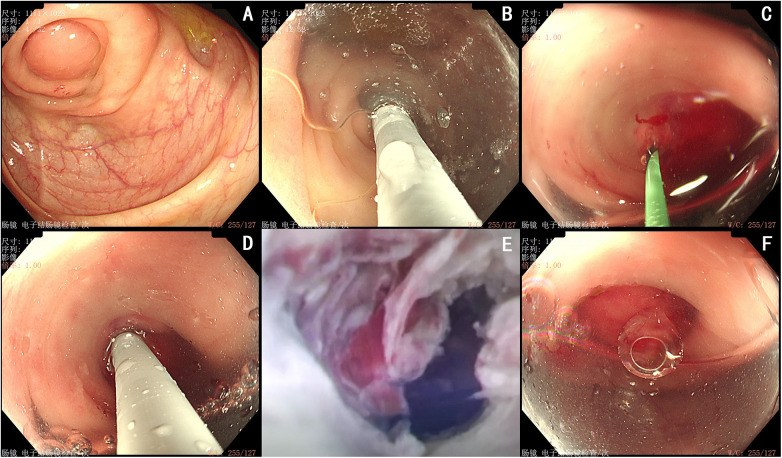
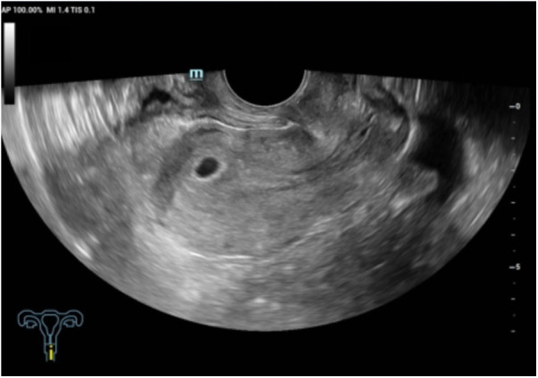

109 — Áp-xe ruột thừa ở thai phụ: chọn dẫn lưu qua da / ERAT thay vì mổ, ngưỡng kích thước và theo dõi sản khoa
Tags: pattern:ap-xe-o-bung pattern:viem-ruot-thua pattern:dich-ho-chau vung:ho-chau vung:o-bung protocol:sieu-am-bung protocol:MRI-bung-khong-can-quang protocol:ERAT-noi-soi score:AIR score:Alvarado
Mức chắc chắn (certainty): tổng hợp y văn (literature synthesis) — ca nguyên văn thai 3 tuần 4 ngày có áp-xe ruột thừa 41 × 25 × 29 mm được dẫn lưu qua da + ERAT, thai tiếp tục sống (Front Surg 2026, PMC13216021), ghép với tổng quan hệ thống MRI ở thai phụ (26 nghiên cứu, PMC9676701), meta sánh nội soi – mổ mở (PMC8495069), network meta ERAT – mổ – kháng sinh (PMC12495716), hướng dẫn SAGES 2024 (PMC11133165) và loạt 34 áp-xe ruột thừa người lớn dự báo thất bại bảo tồn (PMC6768819). Không có RCT riêng ở thai phụ → mọi ngưỡng là suy luận từ người lớn + ca nhi.
Câu hỏi thực hành: thai phụ 24 tuổi, thai 3 tuần 4 ngày (β-hCG 240 IU/L, chưa thấy túi thai), đau hố chậu phải 5 ngày, sốt 39,0 °C. Siêu âm: khối 41 × 25 × 29 mm cạnh ruột thừa, có tín hiệu mạch trong khối; WBC 13,74 × 10⁹/L, IL-6 80,7 pg/mL, PCT 0,17 ng/mL. Câu hỏi: khối này là áp-xe hay là thai ngoài tử cung/khối phần phụ? có nên mổ nội soi cắt ruột thừa ngay ở tam cá nguyệt I không? dẫn lưu qua da đủ chưa, và khi nào thêm ERAT? theo dõi thai bằng gì sau can thiệp? Bài chốt bốn việc: (1) viêm ruột thừa cấp gặp ở 1/1.000–2.000 thai kỳ, và 4–20% tiến triển thành áp-xe/đám quánh — nhóm này mới là nhóm cần bàn "mổ hay không mổ"; (2) điều trị bảo tồn (kháng sinh ± dẫn lưu qua da) thất bại ~30%, và ~25,4% ca đã đặt dẫn lưu vẫn phải mổ — nên phải có mốc đánh giá lại ở 48–72 giờ; (3) ổ áp-xe > 40 mm và WBC không giảm sau 24 giờ là hai yếu tố dự báo chuyển mổ; (4) ở tam cá nguyệt I–II, nội soi ổ bụng với áp lực 10–12 mmHg là lựa chọn an toàn (SAGES 2024), còn ERAT là bổ sung nội soi khi dẫn lưu qua da không đủ — nhưng ERAT chưa có chuẩn chỉ định và chưa có dữ liệu thai kỳ ngoài ca báo cáo. Nối 145 – Viêm ruột thừa trong thai kỳ, 161 – Viêm ruột thừa cấp, 160 – Bụng cấp tiêu hóa.
1. Tổng quan bệnh học – cơ chế hình ảnh: vì sao thai phụ dễ bị "che" áp-xe
- Dịch tễ: viêm ruột thừa cấp là cấp cứu ngoại khoa không sản khoa phổ biến nhất khi mang thai, gặp ở ~1/1.000–2.000 thai kỳ (0,063% trong dữ liệu tổng hợp của PMC13216021). 4–20% ca viêm ruột thừa không được xử lý sớm sẽ tiến triển thành áp-xe hoặc đám quánh quanh ruột thừa (phlegmon).
- TẠI SAO vị trí và hình ảnh thay đổi theo tuổi thai: tử cung lớn dần đẩy manh tràng – ruột thừa lên trên và ra ngoài; từ tuần 20 ruột thừa thường nằm trên gai chậu trước trên, đến tam cá nguyệt III có thể ở hạ sườn phải. Vì vậy đau không khu trú ở hố chậu phải và siêu âm hố chậu phải "bình thường" không loại trừ — phải quét theo vị trí ruột thừa đã di chuyển.
- TẠI SAO dễ bỏ sót áp-xe: bạch cầu và CRP tăng sinh lý trong thai kỳ; buồng trứng/khối phần phụ nằm cùng vùng; thai ngoài tử cung cũng gây đau + dịch hố chậu. Bộ ba này là lý do bài này phải có ma trận phân biệt với khối phần phụ và thai ngoài tử cung ở mục (3).
- TẠI SAO hình ảnh thấy được (vật lý):
- Siêu âm: áp-xe là khối echo hỗn hợp/giảm âm, có vỏ không đều, bên trong có echo dày (mủ đặc) và bóng khí lấm tấm (khí sinh hơi từ vi khuẩn); đè đầu dò thấy đau khu trú; Doppler màu: tăng sinh mạch ở vỏ, không có mạch trong lòng mủ (khác khối đặc/u).
- MRI không cản quang: dịch mủ T1 thấp – T2 cao, vỏ dày ngấm thuốc thì muộn, hạn chế khuếch tán ở vỏ và mủ đặc (DWI sáng, ADC tối — mủ giàu tế bào và protein). Khí trong ổ = điểm đen mọi chuỗi xung. Đây là lý do MRI được ưu tiên hơn CT ở thai phụ: không ion hóa, độ tương phản mô mềm cao, và theo meta 26 nghiên cứu, MRI chẩn đoán viêm ruột thừa ở thai phụ với Se 92% / Sp 98% (AUC 99%) (PMC9676701).
- Vì sao KHÔNG dùng CT làm đầu tay: liều bức xạ thai nhi và giảm độ chính xác của siêu âm khi tử cung lớn; CT chỉ dành cho ca không thể MRI và khi kết quả sẽ đổi xử trí ngay.
- Số liệu định lượng phải thuộc:
- Bảo tồn (kháng sinh ± dẫn lưu qua da) ở áp-xe: thất bại ~30%, ~10% cuối cùng phải mổ; riêng nhóm đã đặt dẫn lưu qua da, 25,4% vẫn phải mổ (PMC13216021 dẫn y văn).
- Loạt 34 áp-xe ruột thừa người lớn điều trị bảo tồn: 8/34 (23,4%) chuyển mổ, trung bình sau 5,5 ngày; ổ > 40 mm và WBC ngày 1 không giảm là yếu tố dự báo độc lập; chuyển mổ sớm < 5 ngày rút ngắn nằm viện và giảm chi phí (PMC6768819).
- Sau bảo tồn thành công, tái phát gộp 9,9% (KTC 4,8–20,6) ở trẻ — dùng để tư vấn nguy cơ tái phát khi giữ ruột thừa (PMC12486442).
- Network meta 23 RCT: ERAT ít biến chứng hơn mổ (OR 6,33; 2,35–17,03 theo hướng mổ nhiều biến chứng hơn), tái phát thấp hơn kháng sinh (OR 0,22; 0,08–0,57) nhưng cao hơn mổ (OR 0,27; 0,12–0,64); tỉ lệ thất bại của kháng sinh cao hơn mổ (OR 0,05; 0,02–0,15) (PMC12495716).
- Nội soi so với mổ mở ở thai phụ: sẩy thai OR 1,93 (1,39–2,69) trong meta 2021 — nhưng đây là so sánh quan sát, chịu nhiễu do ca nội soi thường nặng hơn; hướng dẫn SAGES 2024 vẫn khuyến cáo có điều kiện: nội soi hơn mổ mở và mổ hơn điều trị bảo tồn ở viêm ruột thừa cấp (PMC8495069, PMC11133165).
- Kỹ thuật nội soi theo tuổi thai: áp lực bơm hơi 10–12 mmHg, tư thế nằm ngửa ≤ 20 tuần, nghiêng trái ≥ 21 tuần, 3 trocar; 6 ca, trung vị 21 tuần, không chuyển mổ, không biến chứng sản khoa (PMC13402063).

(A) Siêu âm bụng có Doppler: khối echo hỗn hợp 41 × 25 × 29 mm ở hố chậu phải, có tín hiệu mạch trong khối (vỏ viêm tăng sinh mạch); (B) siêu âm đầu dò âm đạo: nội mạc 9 mm, chưa thấy túi thai — ở tuần 3–4 điều này bình thường, không được vì thế mà loại trừ thai ngoài tử cung. Nguồn: Front Surg 2026 (PMC13216021), CC BY 4.0, nguyên bản.2. Mẫu hình + chẩn đoán phân biệt theo vị trí và thành phần khối (gamut)
- Gamut theo hình thái khối:
- Ổ dịch có vỏ dày + bóng khí lấm tấm → áp-xe (khí sinh hơi: E. coli, Klebsiella, kỵ khí).
- Đám quánh (phlegmon) không hóa lỏng → không chọc/dẫn lưu (không có ổ để dẫn lưu, chỉ kháng sinh).
- Ổ dịch thuần nhất, thành mỏng, không khí → nang/giả nang, hoặc dịch túi cùng — không phải áp-xe.
- Khối đặc có mạch trong lòng + cấu trúc nang/dịch trong → nghĩ khối phần phụ (u bì, u nang xuất huyết, xoắn) hoặc thai ngoài tử cung.
- Dịch tự do + khí tự do ngoài lòng ruột → thủng ruột thừa, chỉ định mổ, không dẫn lưu đơn thuần.
- Gamut theo vị trí (thay đổi vì tử cung lớn): hố chậu phải (tam cá nguyệt I) · cạnh gai chậu trước trên (tuần 12–20) · hạ sườn phải/cạnh thận phải (tam cá nguyệt III) · túi cùng Douglas (áp-xe chảy xuống, dễ nhầm với khối phần phụ).
- Gamut theo bối cảnh thai: thai trong tử cung sống (ưu tiên can thiệp tối thiểu) · chưa xác định vị trí thai (phải loại thai ngoài tử cung trước mọi can thiệp) · thai ngoài tử cung đồng thời (chẩn đoán kép hiếm, không được bỏ) · thai lưu/sẩy (nguy cơ nhiễm trùng tử cung làm nhiễu hình ảnh).
- Gợi nhớ "ABSCESS": Appendix (ruột thừa đã di chuyển) · Blood flow ở vỏ (không mạch trong lòng) · Size > 40 mm (nguy cơ thất bại) · Cavity with gas (khí = vi khuẩn) · Ectopic phải loại trừ · Second look 48–72 giờ · Survey thai sau can thiệp.
3. Bảng so sánh phân biệt (ma trận đối chiếu)
| Thực thể (entity) | Hình ảnh điển hình (US/MRI) | Chốt vào (rule-in) | Chốt loại (rule-out) | Gợi ý xác nhận |
|---|---|---|---|---|
| Áp-xe ruột thừa | Khối echo hỗn hợp, vỏ dày, bóng khí, đau khu trú khi đè đầu dò, mạch ở vỏ | Khối cạnh ruột thừa + khí trong khối + sốt/CRP cao | Khối thuần đặc, có mạch trong lòng → không phải áp-xe | US → MRI; dẫn lưu qua da > 40 mm |
| Đám quánh (phlegmon) | Khối đặc, không hóa lỏng, mờ mỡ quanh ruột thừa, không có vỏ rõ | Khối đặc không dịch + ruột thừa dày > 6 mm kèm mờ mỡ | Có ổ dịch rõ → áp-xe (cần dẫn lưu) | Kháng sinh, không chọc; MRI lại sau 48–72 giờ |
| Thai ngoài tử cung | Khối dạng vòng/đặc cạnh buồng trứng, dịch túi cùng, β-hCG không tăng đôi | β-hCG + khối phần phụ + không túi thai trong tử cung | Túi thai trong tử cung sống → không phải | β-hCG 48 giờ + TVUS; không dẫn lưu trước khi loại |
| Xoắn phần phụ | Buồng trứng to, nhiều nang nhỏ ngoại vi, dấu xoáy (whirlpool), không có mạch tĩnh mạch | Đau đột ngột + buồng trứng to + mất dòng tĩnh mạch | Có mạch bình thường + khối có khí → áp-xe | Doppler; mổ nội soi khi nghi |
| U bì (dermoid) biến chứng | Khối T1 sáng, mất tín hiệu trên T1 fat-sat, mỡ lỏng, mức dịch–mỡ | T1 sáng + triệt mỡ | T1 thấp, T2 cao, hạn chế khuếch tán → mủ | MRI; không chọc vì nguy cơ viêm phúc mạc hóa học |
| Viêm ruột thừa chưa biến chứng | Ruột thừa > 6 mm, không đè xẹp, mờ mỡ, appendicolith | Đường kính > 6 mm + không xẹp khi đè + mờ mỡ | Có ổ dịch có vỏ → đã biến chứng | Mổ nội soi (SAGES 2024) |
| Nhiễm trùng tiết niệu/ứ nước thận phải | Thận ứ nước, niệu quản giãn, không có khối cạnh ruột thừa | Ứ nước + đau hông lưng + nitrit/leukocyte niệu | Có khối hố chậu phải độc lập → nghĩ áp-xe | Siêu âm thận; không dẫn lưu ổ bụng |
| Viêm mô tế bào thành bụng/khối thành bụng | Tổn thương trong thành bụng, không trong phúc mạc | Khối khu trú trong cơ thành bụng | Khối trong phúc mạc, di động theo ruột | MRI; kháng sinh ± dẫn lưu thành bụng |
- Không tạo ảnh ghép: cả 3 ảnh đều cùng một bệnh nhân nhưng khác chuỗi/thời điểm (siêu âm trước can thiệp; nội soi ERAT; siêu âm kiểm tra sau 5 ngày) — giữ riêng để người đọc thấy diễn tiến, không ghép thành một khung dễ gây hiểu sai là ba bệnh nhân.
4. Protocol chụp + ngưỡng can thiệp + bậc thang xử trí
- Chẩn đoán hình ảnh theo bậc (thai phụ):
- Siêu âm bụng – hố chậu phải (đầu dò cong + đầu dò thẳng), quét theo vị trí ruột thừa đã di chuyển; đo đường kính ruột thừa, tìm appendicolith, mờ mỡ, ổ dịch, khí.
- MRI bụng–khung chậu không cản quang (không gadolinium trừ khi bắt buộc): T2 SSFSE/HASTE, T1, DWI + ADC, T2 FS; đọc 4 câu: ổ dịch ở đâu, kích thước? có vỏ ngấm thuốc? có khí? có khối phần phụ/thai ngoài tử cung kèm?
- CT chỉ khi MRI không có/chống chỉ định và kết quả đổi xử trí ngay.
- Không chọc dẫn lưu trước khi loại trừ thai ngoài tử cung và không có rối loạn đông máu.
- Ngưỡng quyết định (tổng hợp, ghi rõ mức chắc chắn):
- Ổ ≤ 30–40 mm, không nhiễm trùng nặng, thai ổn: kháng sinh IV + theo dõi; MRI/US lại 48–72 giờ. (Ngưỡng 40 mm là từ loạt người lớn, chưa có nghiên cứu riêng thai phụ — nhãn suy luận.)
- Ổ > 40 mm hoặc có khí hoặc không đáp ứng sau 48–72 giờ: dẫn lưu qua da (PCD) dưới siêu âm/CT; kim 8–10 Fr, không đi xuyên tử cung/thai, đường vào ngoài phúc mạc hoặc qua thành bụng bên; cấy dịch luôn.
- PCD thất bại (dịch đặc, nhiều vách, ống tắc) hoặc nghi thủng: ERAT (nội soi ruột thừa ngược dòng: đặt guidewire, catheter, rửa lòng ruột thừa, có thể stent), hoặc mổ nội soi.
- Có biến chứng toàn thân (nhiễm khuẩn huyết, suy cơ quan), thủng, hoặc không kiểm soát được: mổ — nội soi 10–12 mmHg nếu ≤ 20 tuần, mở nếu tam cá nguyệt III phức tạp.
- Sơ đồ quyết định:
flowchart TD
A[Thai phụ đau hố chậu phải + sốt] --> B[Siêu âm theo vị trí ruột thừa]
B -->|Không rõ| C[MRI không cản quang]
C --> D{Có ổ dịch có vỏ?}
B -->|Có ổ dịch| D
D -->|Không, chỉ đám quánh| E[Kháng sinh IV + theo dõi 48-72 giờ]
D -->|Có, <= 40 mm| F[Kháng sinh + theo dõi sát<br/>đánh giá lại 48-72 giờ]
D -->|Có, > 40 mm hoặc có khí| G[Dẫn lưu qua da dưới hình ảnh<br/>cấy dịch, kháng sinh]
F --> H{Đáp ứng sau 48-72 giờ?}
F -->|Xấu đi| G
H -->|Không| G
G --> I{Đáp ứng?}
I -->|Không, ổ nhiều vách/ống tắc| J[ERAT hoặc mổ nội soi]
G -->|Có| K[Theo dõi thai: TVUS 1-2 tuần/lần<br/>sản khoa + kháng sinh đủ liệu trình]
J --> K
E --> K
- Chi tiết ERAT (khi chọn): nội soi qua hậu môn tới manh tràng, kéo van Gerlach, đặt guidewire 0,035 in vào lòng ruột thừa, catheter imaging 9 Fr (đường kính ngoài ≤ 3,2 mm), rửa sạch mủ, có thể đặt stent. Trong ca chỉ điểm: PCD ngày 2 chỉ ra 13 mL dịch nâu đục, sốt và đau không giảm, WBC tăng lại 12,96 × 10⁹/L → ERAT ngày 5; sau ERAT hết sốt, WBC 5,38, PCT 0,04, IL-6 34,3; cấy dịch E. coli nhạy ertapenem; rút dẫn lưu sau 4 ngày không ra dịch (PMC13216021). Không đặt dẫn lưu trong lòng ruột thừa trong ca này — hiệu quả đến từ rửa trực tiếp ổ mủ.
- Theo dõi sản khoa sau can thiệp (bắt buộc, đừng bỏ):
- TVUS kiểm tra túi thai/thai sống 3–7 ngày sau can thiệp (ca chỉ điểm: 5 ngày sau ERAT, túi thai 10 × 6 × 7 mm trong buồng tử cung).
- Kháng sinh đủ liệu trình theo ổ nhiễm (thường 7–10 ngày), ưu tiên thuốc an toàn thai (beta-lactam; tránh quinolone/aminoglycoside kéo dài khi không cần).
- Theo dõi sản khoa mỗi 2–4 tuần tới khi hết nguy cơ sinh non; cảnh báo dọa sinh non, vỡ ối, chorioamnionitis.
- Siêu âm lại ổ áp-xe sau 2–4 tuần; nếu còn ổ dịch > 30 mm hoặc tái phát → cân nhắc ERAT/mổ.
5. Biến thể bình thường và cạm bẫy
- Cạm bẫy 1 — "chưa thấy túi thai" bị đọc là thai ngoài tử cung rồi mổ cắt ruột thừa: ở tuần 3–4, không thấy túi thai là bình thường (β-hCG 240 IU/L còn quá thấp). Ngược lại, không được dẫn lưu ổ bụng khi chưa loại thai ngoài tử cung — đặt ống qua khối thai ngoài tử cung gây chảy máu.
- Cạm bẫy 2 — đọc "khối có mạch" là u đặc: áp-xe có mạch ở vỏ nhưng không có mạch trong lòng mủ; u đặc có mạch xuyên trong tổn thương. Doppler là chốt phân biệt, không phải kích thước.
- Cạm bẫy 3 — dùng kháng sinh rồi mổ quá muộn: bảo tồn thất bại ~30%; WBC không giảm sau 24 giờ và ổ > 40 mm là dấu hiệu chuyển mổ sớm, không phải chờ hết liệu trình.
- Cạm bẫy 4 — coi "dẫn lưu qua da là xong": 25,4% ca đã đặt dẫn lưu vẫn phải mổ; ống nhỏ dễ tắc khi mủ đặc/nhiều vách. Luôn có kế hoạch B (ERAT hoặc mổ nội soi) và mốc đánh giá 48–72 giờ.
- Cạm bẫy 5 — quên vị trí ruột thừa đã di chuyển: siêu âm "hố chậu phải trống" ở tam cá nguyệt III không loại trừ; phải quét dưới bờ sườn phải/cạnh thận.
- Cạm bẫy 6 — dùng CT vì "nhanh": MRI có Se 92/Sp 98% và không bức xạ; CT chỉ khi MRI không khả dụng.
- Cạm bẫy 7 — bỏ theo dõi thai sau can thiệp: ca chỉ điểm mất theo dõi sau 24 tuần, kết cục cuối không rõ — đây là hạn chế thật của bằng chứng, phải nói với gia đình rằng ERAT ở thai kỳ mới có ca báo cáo, không có chuẩn.
- Biến thể bình thường: ruột thừa dưới 6 mm, đè xẹp được, một ít dịch túi cùng ở thai phụ khỏe mạnh; hạch mạc treo nhỏ cạnh manh tràng; không khí trong ruột non không phải khí trong ổ dịch.
6. Tự lượng giá — Blind Quiz
Ca 1 — Thai 3 tuần 4 ngày, đau hố chậu phải 5 ngày, sốt 39 °C:
- Gợi ý: WBC 13,74 × 10⁹/L; β-hCG 240 IU/L; chưa thấy túi thai.
- Câu hỏi: khối đo bao nhiêu? Hai đặc điểm nào nói áp-xe chứ không phải u? Có nên mổ nội soi ngay không?
Bấm để hiện đáp án (findings + chẩn đoán)
- Dấu hiệu: khối 41 × 25 × 29 mm, echo hỗn hợp, vỏ dày có tín hiệu mạch, không có mạch trong lòng; nội mạc 9 mm, chưa thấy túi thai.
- Chẩn đoán: áp-xe ruột thừa ở thai rất sớm (3 tuần 4 ngày).
- Vì sao không mổ ngay: ở tam cá nguyệt I, mổ/nội soi có nguy cơ sẩy thai; chọn kháng sinh + dẫn lưu qua da trước, đánh giá lại 48–72 giờ; mổ khi thất bại hoặc có biến chứng.
- Nguồn ảnh: Front Surg 2026 (PMC13216021), CC BY 4.0.
Ca 2 — Sau dẫn lưu 3 ngày, sốt lại, WBC tăng:

- Gợi ý: PCD ra 13 mL dịch nâu đục, sau đó dịch vàng đục, đau tăng, WBC 12,96 × 10⁹/L, PCT 0,20 ng/mL.
- Câu hỏi: (A)–(F) là các bước gì? Vì sao chọn ERAT thay vì mổ nội soi ở thai 4–5 tuần? Tiêu chí thành công sau ERAT là gì?
Bấm để hiện đáp án (findings + chẩn đoán)
- Dấu hiệu: (A) lỗ ruột thừa phù nề, xung huyết, tắc; (B) đẩy van Gerlach bằng cap trong; (C) đặt guidewire 0,035 in, mủ chảy ra; (D) catheter imaging 9 Fr vào lòng ruột thừa; (E) nội soi độ phóng đại thấy phù nề, hẹp lòng; (F) rửa sạch lòng ruột thừa.
- Chẩn đoán: áp-xe ruột thừa không kiểm soát bằng PCD → ERAT (dẫn lưu trong qua nội soi).
- Vì sao: tránh mổ/nội soi ổ bụng ở thai sớm (nguy cơ sẩy thai, gây mê); ERAT không xuyên tử cung, không bơm hơi ổ bụng.
- Thành công: hết sốt, giảm đau, WBC/PCT/IL-6 giảm, dịch dẫn lưu < 10 mL/ngày trong 4 ngày rồi rút; thai sống trên TVUS.
- Nguồn ảnh: Front Surg 2026 (PMC13216021), CC BY 4.0.
Ca 3 — Kiểm tra 5 ngày sau ERAT:

- Gợi ý: bệnh nhân hết sốt, không ra máu âm đạo, dẫn lưu đã rút.
- Câu hỏi: cấu trúc trong buồng tử cung là gì, đo bao nhiêu? Vì sao phải chụp lại đúng lúc này? Bước theo dõi tiếp theo?
Bấm để hiện đáp án (findings + chẩn đoán)
- Dấu hiệu: túi thai echo trống trong buồng tử cung, ~10 × 6 × 7 mm, không dịch túi cùng, không khối cạnh tử cung.
- Chẩn đoán: thai trong tử cung sống, tiếp tục phát triển sau ERAT — xác nhận can thiệp không ảnh hưởng thai.
- Vì sao chụp lại: lúc chẩn đoán chưa thấy túi thai (3 tuần 4 ngày), nên phải chứng minh thai nằm trong tử cung trước khi kết luận "không phải thai ngoài tử cung"; đây cũng là mốc an toàn sản khoa sau can thiệp.
- Tiếp theo: kháng sinh đủ liệu trình, theo dõi sản khoa 2–4 tuần/lần, siêu âm ổ áp-xe sau 2–4 tuần; cảnh báo dọa sinh non.
- Nguồn ảnh: Front Surg 2026 (PMC13216021), CC BY 4.0.
Bài liên quan chéo
- 145 – Viêm ruột thừa trong thai kỳ
- 161 – Viêm ruột thừa cấp
- 160 – Bụng cấp tiêu hóa
- 500 – Tổng quan Vú & Sản phụ khoa
Ảnh
- 3 ảnh, tất cả CC BY 4.0 từ PMC13216021 (cùng một ca) — nguồn, giấy phép, phái sinh trong
images/CREDITS.md. - Không tạo ảnh ghép: giữ riêng từng thời điểm để thấy diễn tiến trước – can thiệp – sau.
Không dùng để chẩn đoán độc lập khi chưa có người hướng dẫn.